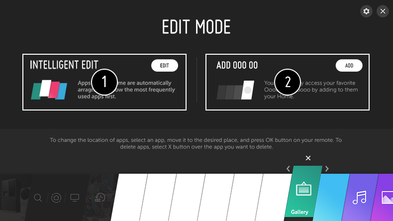

Administrar LG WebOS TV Home
Puede ver una lista de todas las aplicaciones instaladas en la TV, cambiar sus posiciones o eliminarlas.
-
Seleccione la aplicación que desee editar y mantenga pulsado el botón del mando a distancia.
Esto activará el modo de edición de la aplicación.
También puede seleccionar el botón Editar modo en la esquina de la derecha del todo de la lista de Inicio para entrar en el modo Editar aplicación. -
Para mover la aplicación a la posición deseada, vaya a dicha posición y pulse el botón .
Para eliminar una aplicación, seleccione el icono que aparece sobre esta.Puede mover y borrar tantas aplicaciones como desee antes de salir del modo de edición.También puede mover aplicaciones con los botones /
/  del mando a distancia.
del mando a distancia.
- Una vez finalizada la edición, pulse en la parte superior derecha para salir del modo Editar aplicación.
Algunas aplicaciones no se puede editar.

- Puede organizar la lista de aplicaciones automáticamente en orden de más frecuentes en función de su patrón acumulado de uso de aplicaciones.
-
Puede añadir su canal de servicio de vídeo favorito a la lista.
Para utilizar esta función se necesita una conexión a Internet.Esta función solo está disponible en algunos modelos.